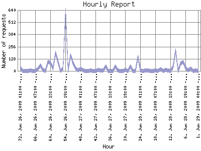

Analog 5.32
Analog 5.32 Report Magic 2.21
Report Magic 2.21The Hourly Report identifies the level of activity for each hour within the report timeframe. Remember that one page hit can result in several server requests as the images for each page are loaded.

| Hour | Number of requests | Percentage of the requests | |
|---|---|---|---|
| 1. | Jun 29, 2009 00:00 - 00:59 | 2 | 0.00% |
| 2. | Jun 28, 2009 23:00 - 23:59 | 5 | 0.00% |
| 3. | Jun 28, 2009 22:00 - 22:59 | 1 | 0.00% |
| 4. | Jun 28, 2009 21:00 - 21:59 | 28 | 0.01% |
| 5. | Jun 28, 2009 20:00 - 20:59 | 6 | 0.00% |
| 6. | Jun 28, 2009 19:00 - 19:59 | 30 | 0.01% |
| 7. | Jun 28, 2009 18:00 - 18:59 | 93 | 0.02% |
| 8. | Jun 28, 2009 17:00 - 17:59 | 81 | 0.02% |
| 9. | Jun 28, 2009 16:00 - 16:59 | 2 | 0.00% |
| 10. | Jun 28, 2009 15:00 - 15:59 | 216 | 0.05% |
| 11. | Jun 28, 2009 14:00 - 14:59 | 44 | 0.01% |
| 12. | Jun 28, 2009 13:00 - 13:59 | 2 | 0.00% |
| 13. | Jun 28, 2009 12:00 - 12:59 | 7 | 0.00% |
| 14. | Jun 28, 2009 11:00 - 11:59 | 9 | 0.00% |
| 15. | Jun 28, 2009 10:00 - 10:59 | 1 | 0.00% |
| 16. | Jun 28, 2009 09:00 - 09:59 | 19 | 0.00% |
| 17. | Jun 28, 2009 08:00 - 08:59 | 0 | 0.00% |
| 18. | Jun 28, 2009 07:00 - 07:59 | 3 | 0.00% |
| 19. | Jun 28, 2009 06:00 - 06:59 | 0 | 0.00% |
| 20. | Jun 28, 2009 05:00 - 05:59 | 2 | 0.00% |
| 21. | Jun 28, 2009 04:00 - 04:59 | 4 | 0.00% |
| 22. | Jun 28, 2009 03:00 - 03:59 | 7 | 0.00% |
| 23. | Jun 28, 2009 02:00 - 02:59 | 1 | 0.00% |
| 24. | Jun 28, 2009 01:00 - 01:59 | 4 | 0.00% |
| 25. | Jun 28, 2009 00:00 - 00:59 | 149 | 0.03% |
| 26. | Jun 27, 2009 23:00 - 23:59 | 2 | 0.00% |
| 27. | Jun 27, 2009 22:00 - 22:59 | 1 | 0.00% |
| 28. | Jun 27, 2009 21:00 - 21:59 | 48 | 0.01% |
| 29. | Jun 27, 2009 20:00 - 20:59 | 1 | 0.00% |
| 30. | Jun 27, 2009 19:00 - 19:59 | 10 | 0.00% |
| 31. | Jun 27, 2009 18:00 - 18:59 | 1 | 0.00% |
| 32. | Jun 27, 2009 17:00 - 17:59 | 2 | 0.00% |
| 33. | Jun 27, 2009 16:00 - 16:59 | 3 | 0.00% |
| 34. | Jun 27, 2009 15:00 - 15:59 | 47 | 0.01% |
| 35. | Jun 27, 2009 14:00 - 14:59 | 2 | 0.00% |
| 36. | Jun 27, 2009 13:00 - 13:59 | 1 | 0.00% |
| 37. | Jun 27, 2009 12:00 - 12:59 | 1 | 0.00% |
| 38. | Jun 27, 2009 11:00 - 11:59 | 46 | 0.01% |
| 39. | Jun 27, 2009 10:00 - 10:59 | 3 | 0.00% |
| 40. | Jun 27, 2009 09:00 - 09:59 | 7 | 0.00% |
| 41. | Jun 27, 2009 08:00 - 08:59 | 11 | 0.00% |
| 42. | Jun 27, 2009 07:00 - 07:59 | 1 | 0.00% |
| 43. | Jun 27, 2009 06:00 - 06:59 | 2 | 0.00% |
| 44. | Jun 27, 2009 05:00 - 05:59 | 3 | 0.00% |
| 45. | Jun 27, 2009 04:00 - 04:59 | 2 | 0.00% |
| 46. | Jun 27, 2009 03:00 - 03:59 | 1 | 0.00% |
| 47. | Jun 27, 2009 02:00 - 02:59 | 3 | 0.00% |
| 48. | Jun 27, 2009 01:00 - 01:59 | 26 | 0.01% |
| 49. | Jun 27, 2009 00:00 - 00:59 | 5 | 0.00% |
| 50. | Jun 26, 2009 23:00 - 23:59 | 28 | 0.01% |
| 51. | Jun 26, 2009 22:00 - 22:59 | 79 | 0.02% |
| 52. | Jun 26, 2009 21:00 - 21:59 | 164 | 0.04% |
| 53. | Jun 26, 2009 20:00 - 20:59 | 4 | 0.00% |
| 54. | Jun 26, 2009 19:00 - 19:59 | 638 | 0.14% |
| 55. | Jun 26, 2009 18:00 - 18:59 | 24 | 0.01% |
| 56. | Jun 26, 2009 17:00 - 17:59 | 2 | 0.00% |
| 57. | Jun 26, 2009 16:00 - 16:59 | 93 | 0.02% |
| 58. | Jun 26, 2009 15:00 - 15:59 | 189 | 0.04% |
| 59. | Jun 26, 2009 14:00 - 14:59 | 25 | 0.01% |
| 60. | Jun 26, 2009 13:00 - 13:59 | 83 | 0.02% |
| 61. | Jun 26, 2009 12:00 - 12:59 | 96 | 0.02% |
| 62. | Jun 26, 2009 11:00 - 11:59 | 2 | 0.00% |
| 63. | Jun 26, 2009 10:00 - 10:59 | 8 | 0.00% |
| 64. | Jun 26, 2009 09:00 - 09:59 | 58 | 0.01% |
| 65. | Jun 26, 2009 08:00 - 08:59 | 23 | 0.01% |
| 66. | Jun 26, 2009 07:00 - 07:59 | 0 | 0.00% |
| 67. | Jun 26, 2009 06:00 - 06:59 | 1 | 0.00% |
| 68. | Jun 26, 2009 05:00 - 05:59 | 3 | 0.00% |
| 69. | Jun 26, 2009 04:00 - 04:59 | 1 | 0.00% |
| 70. | Jun 26, 2009 03:00 - 03:59 | 2 | 0.00% |
| 71. | Jun 26, 2009 02:00 - 02:59 | 2 | 0.00% |
| 72. | Jun 26, 2009 01:00 - 01:59 | 30 | 0.01% |
Most active hour Jan 23, 2009 08:00 - 08:59 : 28,976 requests handled.
Hourly average: 36 requests handled.
This report was generated on June 29, 2009 05:50.
Report time frame August 13, 2008 23:20 to June 29, 2009 00:00.
| Web statistics report produced by: | |
| Analog 5.32 | Report Magic 2.21 |